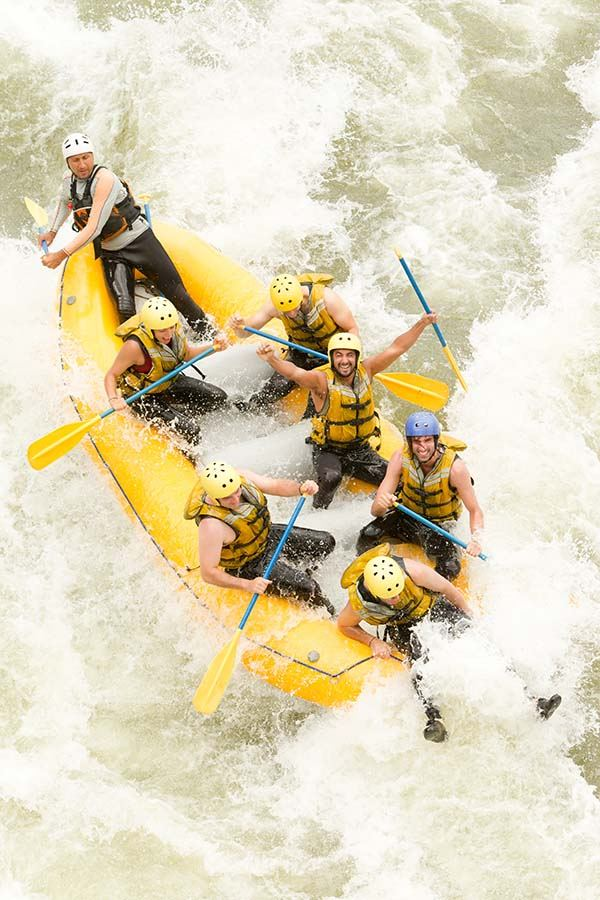
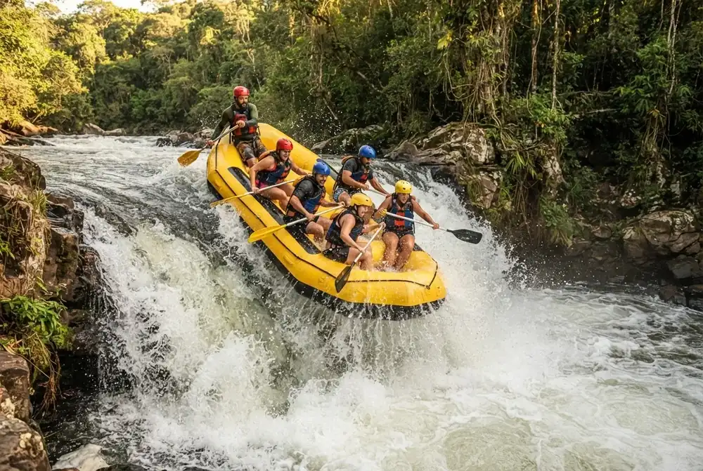
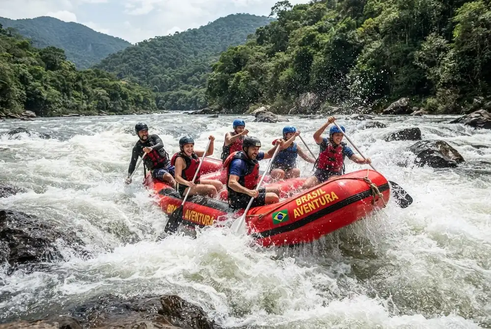
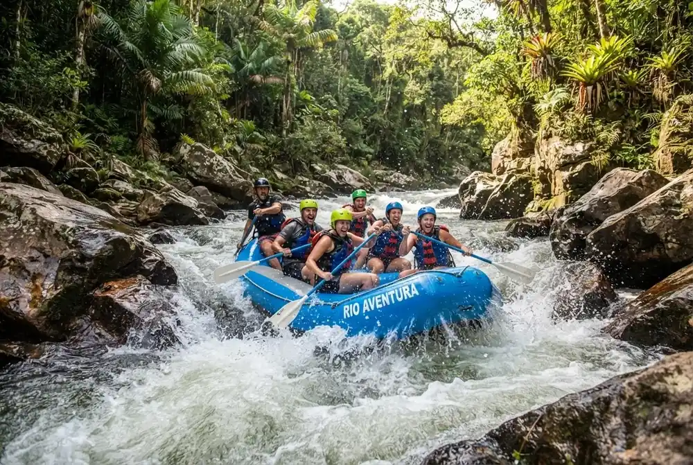
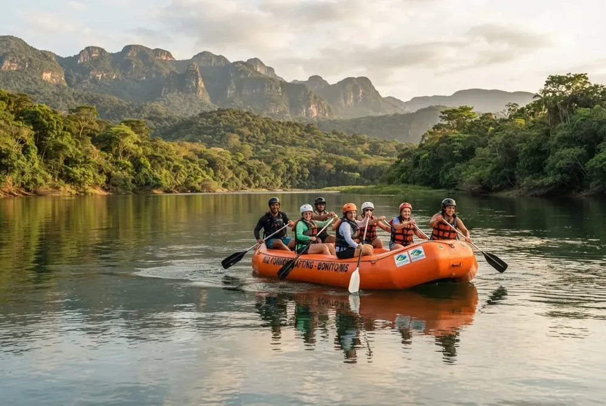
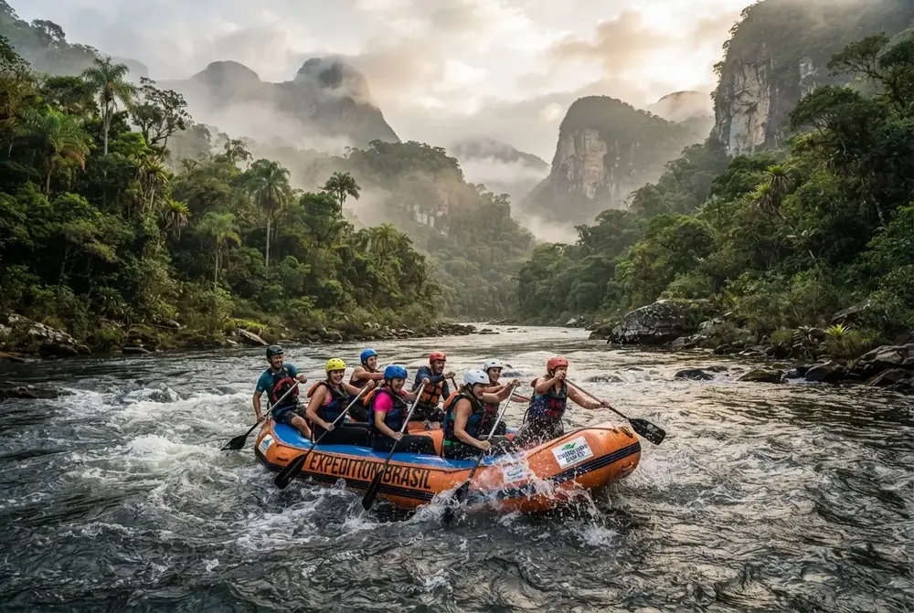

Nossa missão é proporcionar aventuras inesquecíveis em corredeiras, unindo emoção, segurança e contato com a natureza. Guiados por profissionais experientes, transformamos cada descida em uma experiência única para aventureiros de todos os níveis.

Nossa missão é proporcionar aventuras inesquecíveis em corredeiras, unindo emoção, segurança e contato com a natureza. Guiados por profissionais experientes, transformamos cada descida em uma experiência única para aventureiros de todos os níveis.
A Rio Bravo Rafting nasceu em 2010 do sonho de um grupo de amigos apaixonados por esportes radicais, que enxergaram nas corredeiras da região uma forma de unir adesão à aventura e respeito pela natureza.

Ao longo dos anos, tornamo-nos referência em passeios de rafting, recebendo milhares de visitantes e oferecendo hoje uma estrutura completa, com guias certificados e equipamentos de segurança para todos os níveis de experiência.




